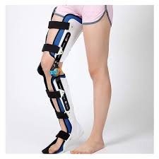
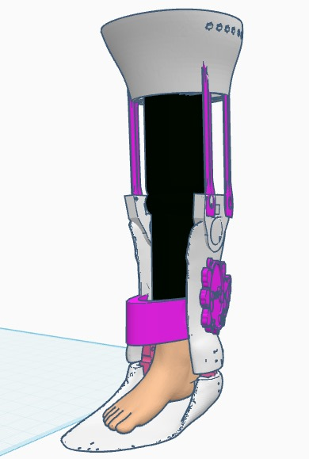
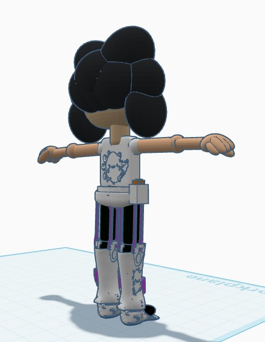
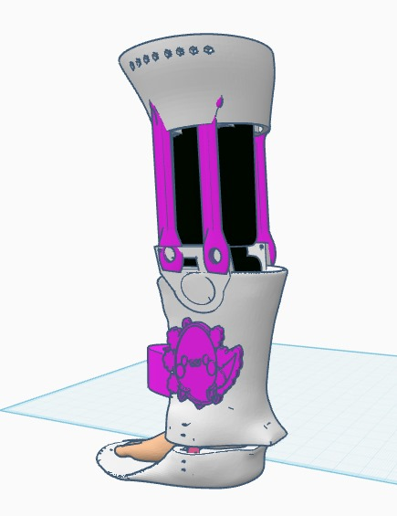
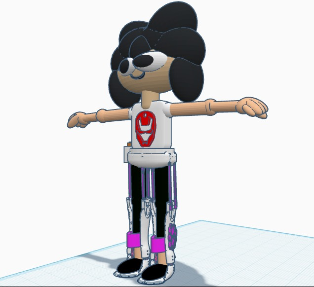

An orthosis is a device used to support, stabilize, or correct a specific part of my body, such as a joint or bone, that may be injured, weakened, or deformed. Orthoses are designed to help me improve the function of that body part, protecting it from movements that can cause further damage, relieving pain, and promoting faster recovery. They can also improve the posture and alignment of the affected parts, allowing me to perform my daily activities more comfortably and safely. They are custom-made to fit my needs and can be made of different materials such as plastics, metals, or flexible fabrics, depending on the type of support I need..
Our product is a dynamic assisted orthosis designed to help people who have suffered an accident, surgery or injury and who, as a result, have difficulty moving a limb correctly.
This device incorporates a mechanical assistance system that allows the user to regain mobility without the need for additional aids, such as canes or crutches. It also features an integrated vibration system designed to improve blood circulation, relieve pain, and provide muscle relaxation, thus contributing to a more efficient and comfortable recovery.
With this orthosis, we seek to offer an innovative solution that combines technology and ergonomics to improve the quality of life of users, facilitating their mobility and well-being.
They incorporate electric motors that generate assisted movement. Sensors detect the user's movement intent. A microprocessor analyzes the data and adjusts the strength and speed of the movement..
They use small electric motors located in different areas of the orthosis. They generate low-frequency vibrations that can help with muscle relaxation or circulation. They allow you to adjust the intensity and duration of the vibrations..
Below is an example of an orthosis
For this new product that we will implement and put on sale, the first thing that is needed is to gather specific information and data on the elements that are being analyzed.
The analysis will depend on the following:
Collect all the above information to measure the profitability of our product, and based on this, know how the income and expenses of the company's activity are reflected in an orderly manner, directly establishing the profits and losses of the financial year to be carried out.
The motorized orthosis is an innovative device designed to improve blood circulation and accelerate rehabilitation for patients with musculoskeletal injuries or problems. Its vibrating function helps reduce inflammation, relieve pain, and improve mobility.
The product is aimed at patients undergoing rehabilitation from accidents, orthopedic surgeries, or musculoskeletal conditions. The main potential customers include physical therapy clinics, hospitals, and individuals requiring home-based recovery therapies.
Given the growing interest in rehabilitation technologies and the demand for non-invasive solutions for pain management and mobility, powered orthoses have a high profitability potential in the market.
| Concept | Monthly costs (MXN) |
|---|---|
| Rent | $10,000 |
| Wages and salaries | $30,000 |
| Public services | $5,000 |
| Advertising | $15,000 |
| Other expenses | $5,000 |
| Total fixed expenses | $65,000 |
| Concept | Costs per unit (MXM) |
|---|---|
| Materials | $2,500 |
| Labour | $1,500 |
| Distribution | $1,000 |
| Others | $500 |
| Total variable costs | $5,000 |
The gross margin is calulated as:
Gross margin=((Total income - Total expenses)/Total income) x 100
The gross margin on the sale of 50 units is approximately 20%.
The Net margin is calculated as:
Net margin= (Net utility/Total income)x 100
Taking into account the following:
We got that our net margin is aproximately 20%
In order to cover the fixed costs:
Break-even point= fixed costs/ contribution margin per unit=
=$65,000/%3,000 = 22 units
| Concept | Amount (MXM) |
|---|---|
| Income (50 x $8,500) | $425,000 |
| Variable costs (50 x $5,500) | $275,000 |
| Fixed costs | $65,000 |
| Net income | $85,000 |
With the sale of 50 units per month, a net margin of $85,000 MXN is obtained, demonstrating that the product is profitable and sustainable. The product's contribution margin is $3,000 MXN per unit. This represents the difference between the sales price ($8,500 MXN) and the variable cost per unit ($5,500 MXN). This margin contributes to covering fixed costs and generating profits.
Contribution margin=(Contribution margin/Sale price)x100
Contribution margin=(3,000/8,500)x100 = 35,3%
The motorized orthosis has strong potential in the rehabilitation market. Strategic planning and financial analysis indicate that the product can be profitable, provided at least 22 monthly sales are achieved to cover fixed costs. With a good marketing strategy and partnerships with healthcare institutions, the company can achieve attractive profitability.
Here we present a 3D model:
   This model will help you to understand how it works and will give more than just one point of view
View 3D ModelYou can purchase one of our orthoses for only $8,500 MXN plus taxes.
You can book or request a quote at the following email address:
Axolot.market@Axolote.mx
Don´t forget to support. At the en of this page you will find more detailed information about how to get in contact with us.